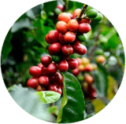

HOW IT WORKS

We Curate The World's Best Coffee
A coffee of the month club that curates amazing micro-lot coffees from around the world. Tanzania, Kenya, Colombia & beyond.
Roasted Fresh & Delivered To You
Each month features 12 ounces of freshly-roasted coffee, flavor notes, a postcard, and brewing tips. The world of coffee delivered fresh to your door.

A World Tour Of Amazing Coffee
Think of us as your coffee tour guides, sending you amazing & exotic coffees you can't find anywhere online or on the shelf.